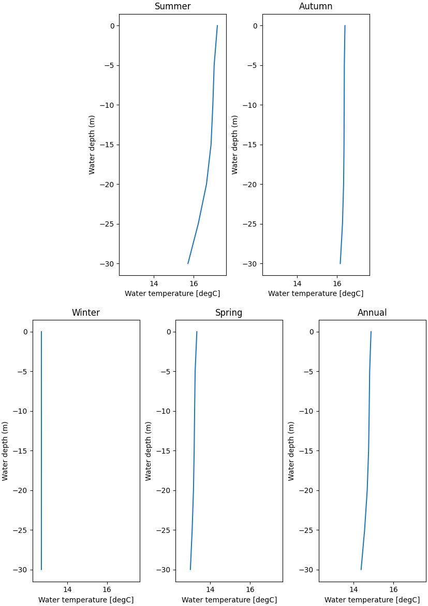

Note
Click here to download the full example code
Thermocline examples¶
Out:
/home/remy/.local/lib/python3.8/site-packages/toto-1.0.0-py3.8.egg/toto/plugins/plots/_thermocline.py:36: RuntimeWarning: Mean of empty slice
yp[i]=self.funct(self.data[val][index])
import pandas as pd
import toto
import matplotlib.pyplot as plt
from toto.inputs.msl import MSLfile
import os
# read the file
filename='https://raw.githubusercontent.com/calypso-science/Toto/master/_tests/nc_file/TB_current.nc'
os.system('wget %s '% filename)
df=MSLfile('TB_current.nc')._toDataFrame()
# Processing
temperature=[x for x in df[0].keys().to_list() if 'temp' in x]
df_new=df[0].StatPlots.plot_thermocline(mag=temperature,
args={'function':'Mean',
'X label':'Water temperature [degC]',
'time blocking':'Seasonal (South hemisphere)',
'display':'On','table':'Off'})
Total running time of the script: ( 0 minutes 39.966 seconds)